コレクション
全90点
作られた年代の古い順に並べています。産地で絞り込むこともできます。
すべて一点ものです。ご注文をいただいたあとに在庫を確認し、2営業日以内にお返事いたします。
古代
〜5世紀
21点
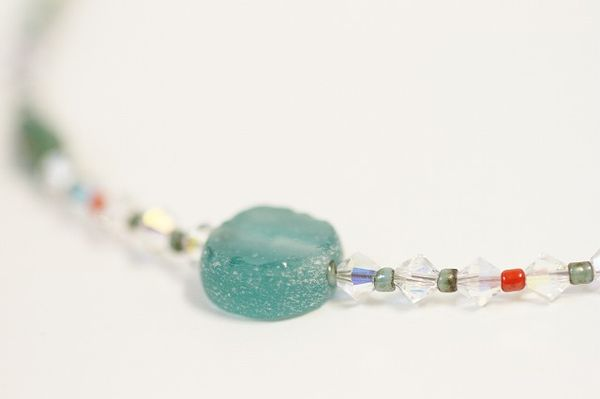
1世紀頃 古代ローマンガラス セミクリア ネックレス 紀元前0世紀 地中海沿岸地区 ¥6,213税込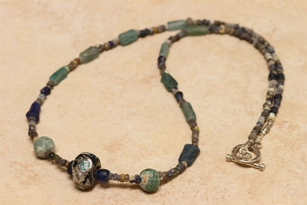
1世紀頃 BC4世紀 (戦国玉 アイビーズ ネックレス) アンティークビーズ とんぼ玉 ¥73,619税込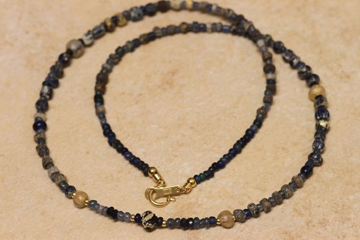
1世紀頃 絶品 ローマングラス ネックレス アンティークビーズ とんぼ玉 ¥41,352税込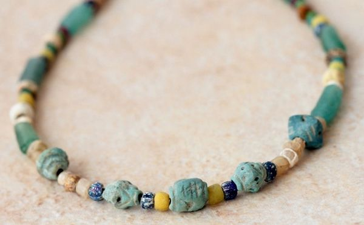
1世紀頃 AD200年 古代ファイアンス玉 ローマンビーズ ネックレス アンティークビーズ とんぼ玉 ¥34,121税込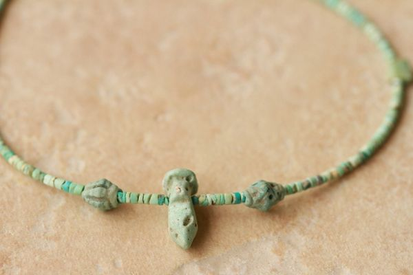
1世紀頃 古代ファイアンスと古代トルコ石 ネックレス アンティークビーズ とんぼ玉 ¥48,379税込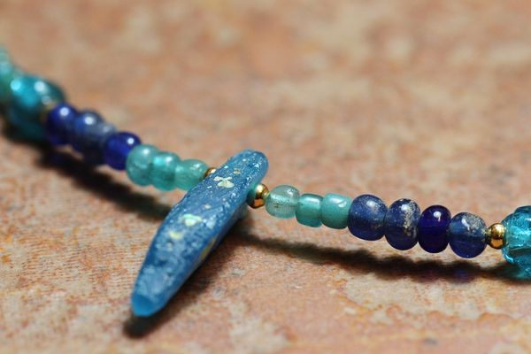
100年頃 美品！ターコイズブルー古代ローマングラス ネックレス アンティークビーズ とんぼ玉 ¥40,231税込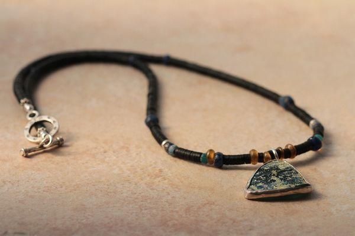
100年頃 神秘的な輝き！古代ローマンブルーグラス とてもきれいなペンダント！ ¥19,963税込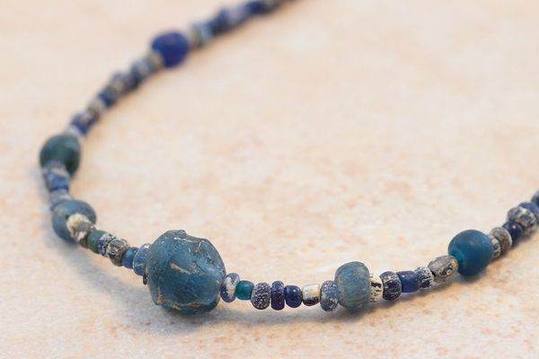
200年頃 3世紀 (ジェンネ ブルーアイビーズ ネックレス) アンティークビーズ とんぼ玉 ¥18,659税込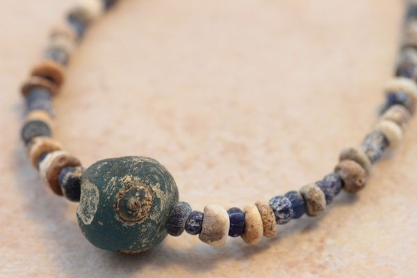
200年頃 3世紀 (ジェンネ ブルーアイビーズ ネックレス) アンティークビーズ とんぼ玉 ¥18,863税込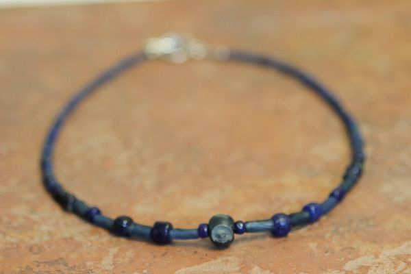
300年頃 3世紀 (ジェンネ ブルーアイビーズ ネックレス) アンティークビーズ とんぼ玉 ¥37,176税込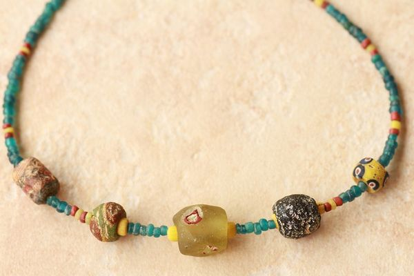
300年頃 古代～中世 モザイク玉 イスラム玉 ネックレス アンティークビーズ とんぼ玉 ¥63,953税込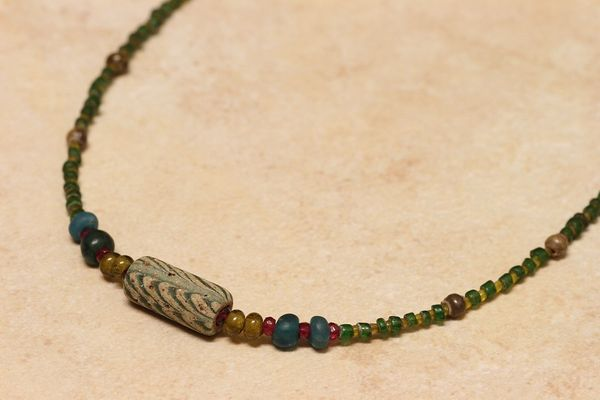
500年頃 絶品 ジャワ玉 ネックレス とんぼ玉 ¥11,713税込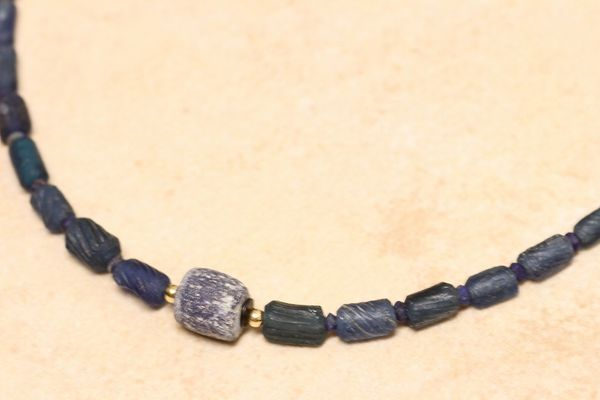
500年頃 ジャワ出土玉 ローマンビーズ ネックレス アンティークビーズ とんぼ玉 ¥18,231税込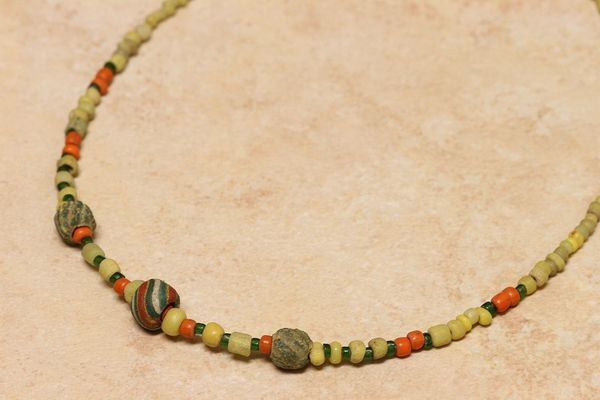
500年頃 ジャワ島出土玉！ 美しい黄色のグラデーション ネックレス アンティークビーズ とんぼ玉 ¥13,679税込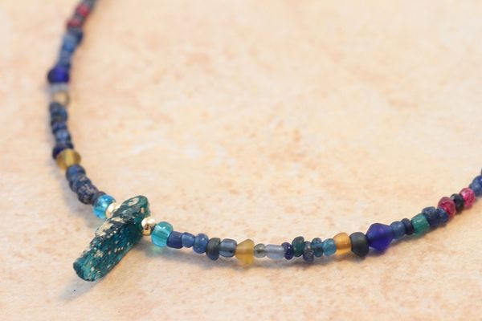
500年頃 ターコイズブルー古代ローマングラス ネックレス アンティークビーズ とんぼ玉 ¥14,871税込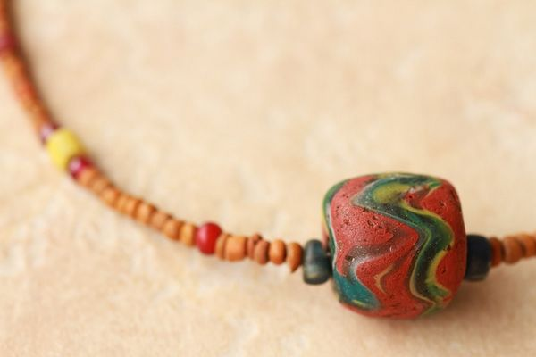
500年頃 アフガニスタン出土 橙イスラム玉 ネックレス アンティークビーズ とんぼ玉 ¥39,702税込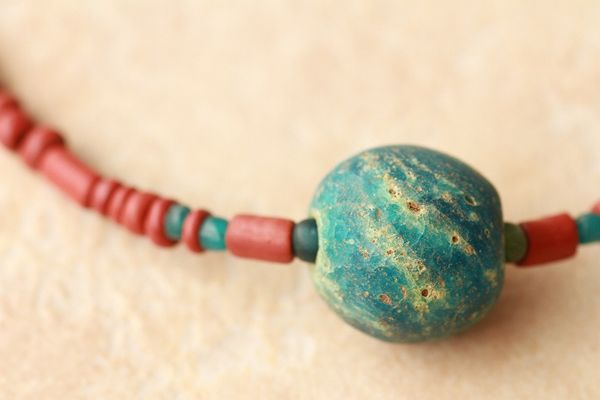
500年頃 小地球のようなジャワ玉 ネックレス アンティークビーズ とんぼ玉 ¥8,454税込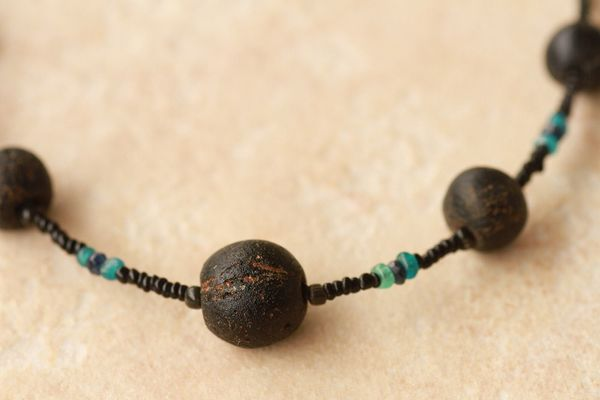
500年頃 黒紺 マニックマニック ネックレス アンティークビーズ とんぼ玉 ¥13,343税込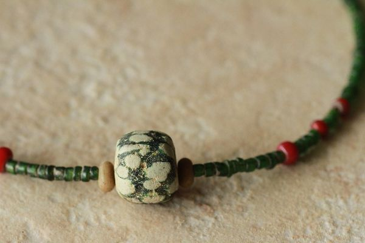
500年頃 マニックトッケイ ネックレス アンティークビーズ とんぼ玉 ¥15,278税込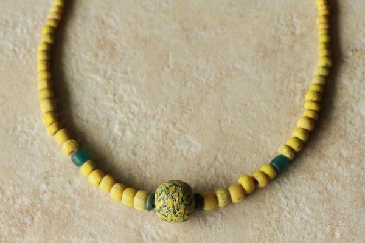
500年頃 モザイク ジャワ玉 ネックレス アンティークビーズ とんぼ玉 ¥17,009税込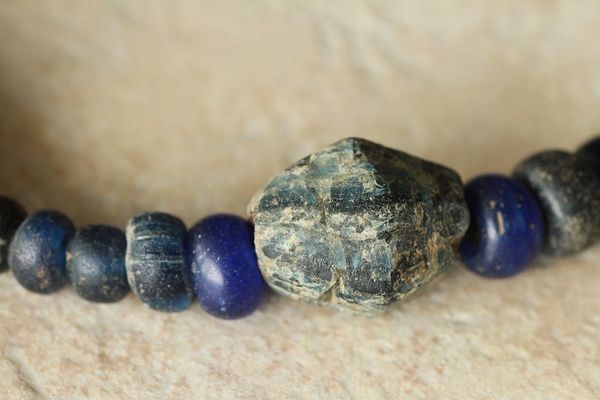
500年頃 ジャワ出土の六角形玉 瑠璃色 ネックレス アンティークビーズ とんぼ玉 ¥15,685税込中世・ルネサンス
6〜16世紀
5点
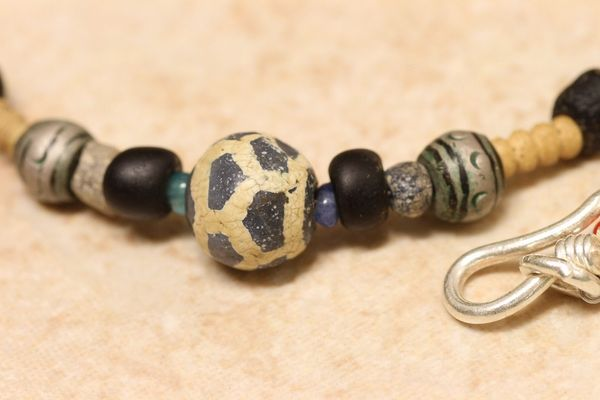
700年頃 Dzi beads ネックレス 7世紀 チベット文化圏 ¥90,241税込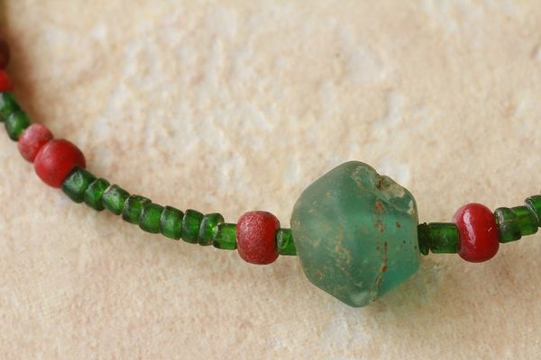
700年頃 グリーン半透明多面体玉 ネックセス アンティークビーズ とんぼ玉 ¥7,638税込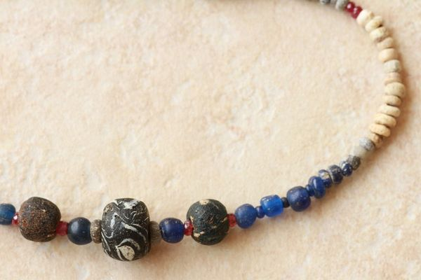
900年頃 10世紀 イスラム玉（ジュンネ出土イスラムモザイク貼付玉） ネックレス とんぼ玉 ¥36,901税込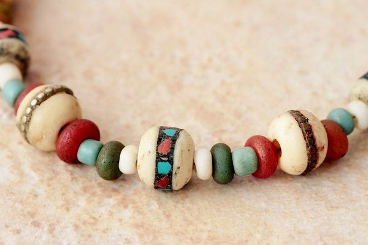
1450年代 バーミャンマーラーカウンタービーズ ネックレス アンティークビーズ とんぼ玉 ¥7,282税込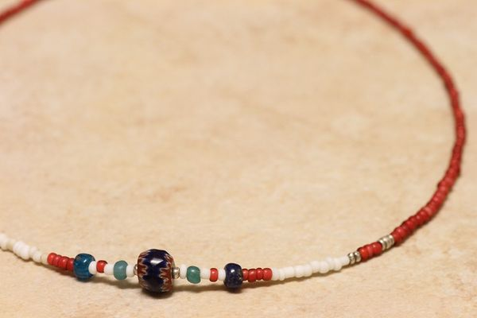
1500年代 レア！7層シェブロン ネックレス 1500年代初期 イタリヤ ヴェネチア ¥28,009税込近代
17〜19世紀
46点
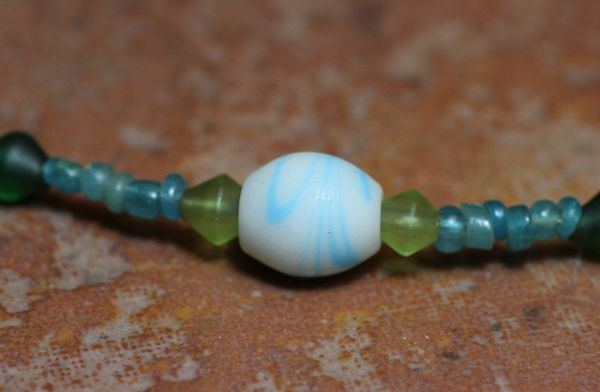
1800年代 1800年代中期 スクイッグル と10世紀前後インドパシフィックビーズネックレス とんぼ玉 ¥14,972税込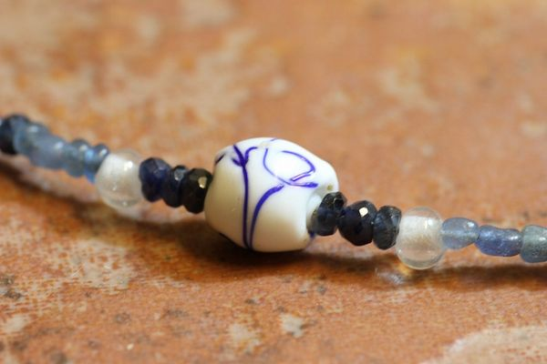
1800年代 1800年代中期 スクイッグル と10世紀前後インドパシフィックビーズネックレス アンティークビーズ とんぼ玉 ¥16,144税込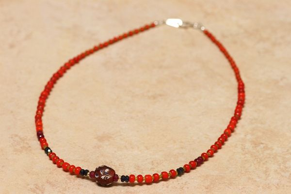
1870年代 1800年代中期ファンシーとホワイトハーツ ネックレス アンティークビーズ とんぼ玉 ¥9,269税込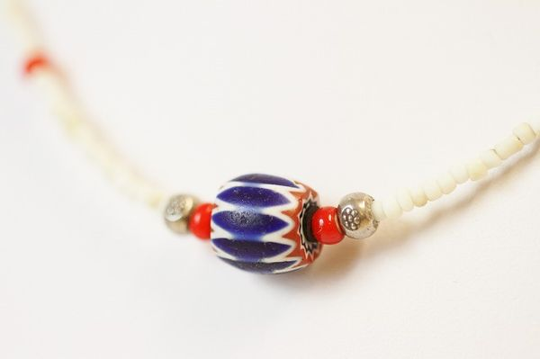
1900年代 6層シェヴロン ネックレス 1900年代 イタリヤ ヴェネチア ¥7,334税込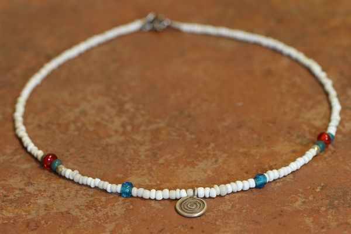
1900年代 カレンシルバー(渦巻き） ネックレス 1900年後半 ¥4,888税込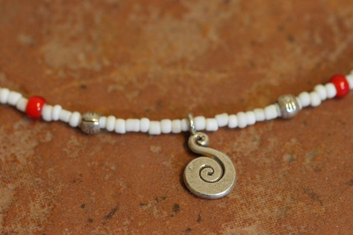
1900年代 カレンシルバー(かたつむり） ネックレス 1900年後半 ¥4,888税込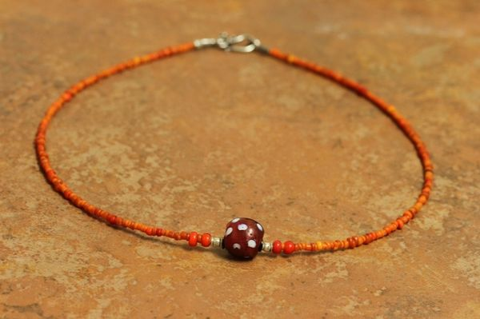
1900年代 ホワイトハーツ（スカンク） ネックレス 1800年～1900年代 イタリヤ ヴェネチア ¥6,824税込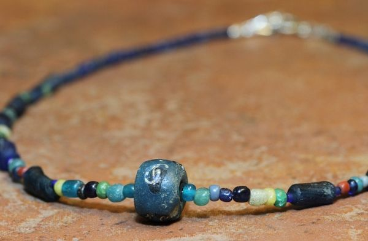
1900年代 1900年代 イタリヤ ヴェネチア (アイビーズ ネックレス) アンティークビーズ とんぼ玉 ¥17,926税込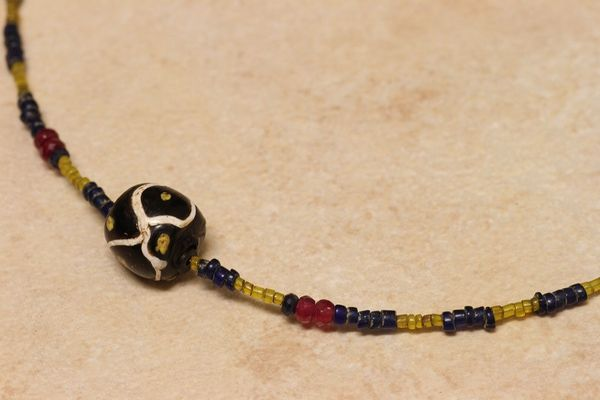
1900年代 ヴェネチア ラトルスネークビーズ アンティークビーズ とんぼ玉 ネックレス ¥15,604税込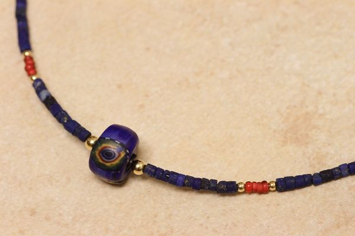
1900年代 瑠璃色のコラボ！ ANTQヴェネチア3眼とラピスラズリ－ ネックレス アンティークビーズ とんぼ玉 ¥30,271税込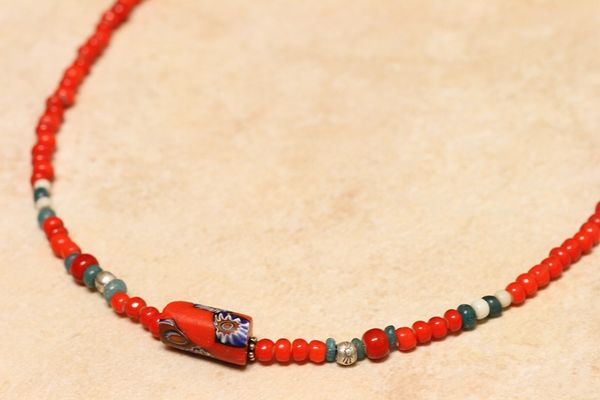
1900年代 ミルフィオリ ネックレス 1800年～1900年代 イタリヤ ヴェネチア ¥10,084税込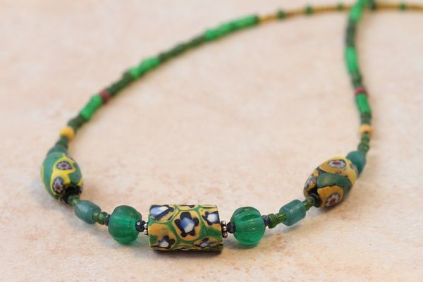
1900年代 レアグリーン ミルフィオリ ネックレス 1900年代 イタリヤ ヴェネチア ¥12,834税込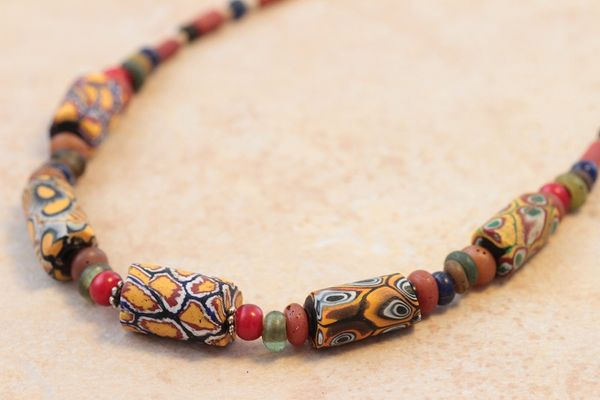
1900年代 ミルフィオリ ネックレス 1900年代 イタリヤ ヴェネチア ¥11,000税込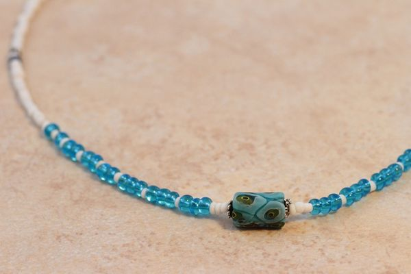
1900年代 ミルフィオリ ネックレス 1900年代 イタリヤ ヴェネチア ¥5,297税込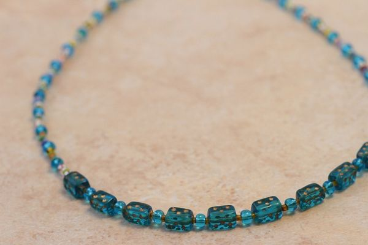
1900年代 1900年代初期：ボヘミア製：クリアブルーダイスビーズ ヴェネチアクリア とんぼ玉 ネックレス ¥5,297税込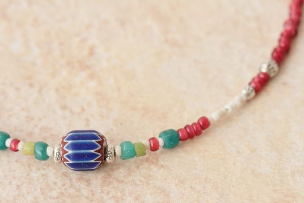
1900年代 1900代初期 イタリヤ ヴェネチア シェブロンと金赤ホワイトハーツ ネックレス とんぼ玉 ¥13,852税込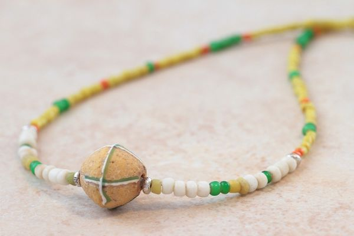
1900年代 金と同価値の黄色キングビーズ！ ネックレス アンティークビーズ とんぼ玉 ¥12,741税込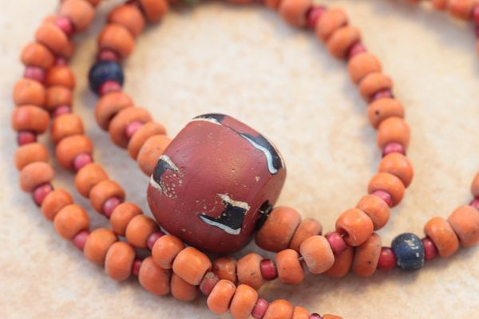
1900年代 1900年代 赤褐色の筋玉 ネックレス とんぼ玉 ¥9,879税込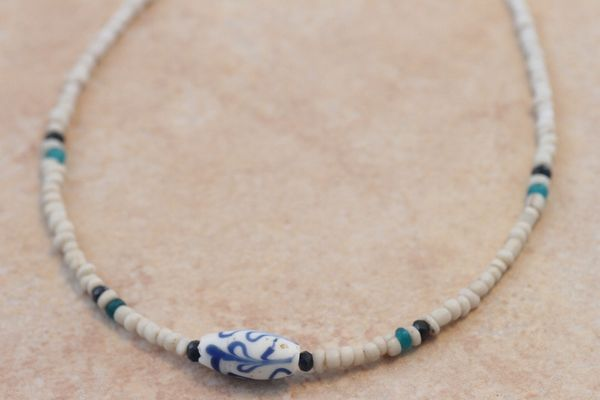
1900年代 ダッチデルフト ネックレス 1800後半～1900年代 イタリヤ ヴェネチア ¥10,797税込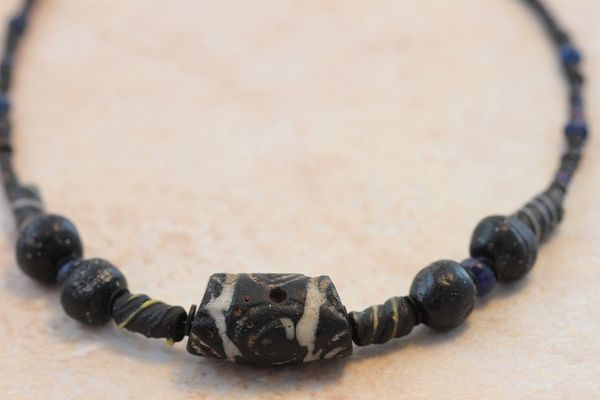
1900年代 護符！アフリカ再生玉 黒のアイビーズ ネックレス アンティークビーズ とんぼ玉 ¥14,626税込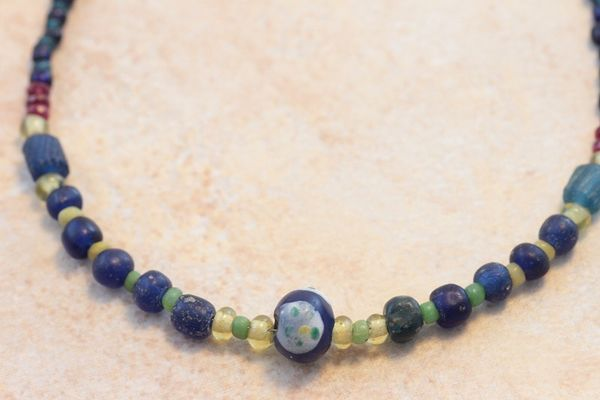
1900年代 江戸時代後期の日本花模様とんぼ玉 ネックレス アンティークビーズ とんぼ玉 ¥9,065税込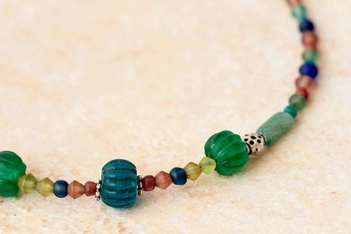
1900年代 1900年代アジア製 クリア緑青みかん玉 ネックレス アンティークビーズ とんぼ玉 ¥7,843税込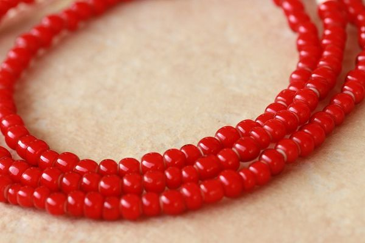
1900年代 アンティークホワイトハーツ ネックレス アンティークビーズ とんぼ玉 ¥5,398税込 1900年代
6層シェブロン中玉 ロングネックレス アンティークビーズ とんぼ玉
¥16,907税込
1900年代
6層シェブロン中玉 ロングネックレス アンティークビーズ とんぼ玉
¥16,907税込
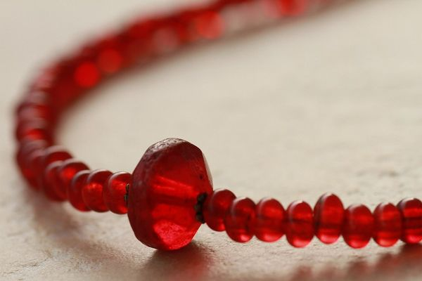
1900年代 赤い ボヘミヤガラス ヨーロピアンジュエリー ネックレス アンティークビーズ とんぼ玉 ¥7,944税込 1900年代 スペードのA のミルフィオリ ネックレス アンティークビーズ とんぼ玉 ¥11,622税込 1900年代 1900年代 緑シェブロン ヴェネチア ネックレス アンティークビーズ とんぼ玉 ¥12,324税込 1900年代 希少グリーン ミルフィオリ ネックレス アンティークビーズ とんぼ玉 ¥10,694税込 1900年代 アンティークボヘミアン蜜柑玉 ネックレス アンティークビーズ とんぼ玉 ¥9,778税込 1900年代 大玉ホワイトハーツ ネックレス アンティークビーズ とんぼ玉 ¥5,194税込 1900年代 大玉ホワイトハーツ 革なめし ネックレス アンティークビーズ とんぼ玉 ¥4,074税込 1900年代 ドゴンクリア 革なめし ネックレス アンティークビーズ とんぼ玉 ¥4,584税込 1900年代 1900年 ヴェネチア製 ホワイトサザンドアイ ネックレス アンティークビーズ とんぼ玉 ¥8,047税込 1900年代 1900年 ヴェネチア製 ミルフィオリ ネックレス アンティークビーズ とんぼ玉 ¥7,129税込 1900年代 1900年 ヴェネチア製 ミルフィオリ ネックレス アンティークビーズ とんぼ玉 ¥7,129税込 1900年代 1900年 ヴェネチア製 ミルフィオリ ネックレス アンティークビーズ とんぼ玉 ¥7,129税込 1900年代 1900年 ヴェネチア製 ミルフィオリ ネックレス アンティークビーズ とんぼ玉 ¥7,638税込 1900年代 1900年 ヴェネチア製 ミルフィオリ ネックレス アンティークビーズ とんぼ玉 ¥7,129税込 1900年代 1900年 ヴェネチア製 ミルフィオリ ネックレス アンティークビーズ とんぼ玉 ¥7,638税込 1900年代 1900年 ヴェネチア製 ミルフィオリ ネックレス アンティークビーズ とんぼ玉 ¥7,129税込 1900年代 1900年 ヴェネチア製 ミルフィオリ ネックレス アンティークビーズ とんぼ玉 ¥7,129税込 1900年代 1900年 ヴェネチア製 シェブロン ネックレス アンティークビーズ とんぼ玉 ¥7,129税込 1900年代 1900年 ヴェネチア製 ミルフィオリ ネックレス アンティークビーズ とんぼ玉 ¥7,129税込 1900年代 1900年 ヴェネチア製 ミルフィオリ ネックレス アンティークビーズ とんぼ玉 ¥7,129税込 1900年代 1900年 ヴェネチア製 ミルフィオリ ネックレス アンティークビーズ とんぼ玉 ¥7,129税込 1900年代 1900年 ヴェネチア製 ミルフィオリ ネックレス アンティークビーズ とんぼ玉 ¥7,129税込近現代
20世紀以降
18点
 2013年代
西アフリカ、クロボ族の再生ガラスとんぼ玉とボヘミアンビーズのネックレス
¥1,599税込
2013年代
西アフリカ、クロボ族の再生ガラスとんぼ玉とボヘミアンビーズのネックレス
¥1,599税込
2013年代
西アフリカ、クロボ族の再生ガラスとんぼ玉とボヘミアンビーズのネックレス
¥1,599税込
2013年代
西アフリカ、クロボ族の再生ガラスとんぼ玉とボヘミアンビーズのネックレス
¥1,599税込